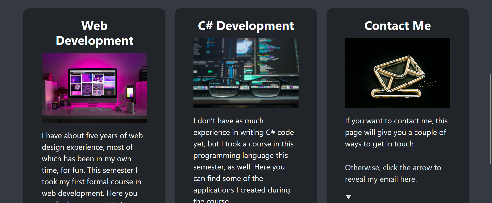
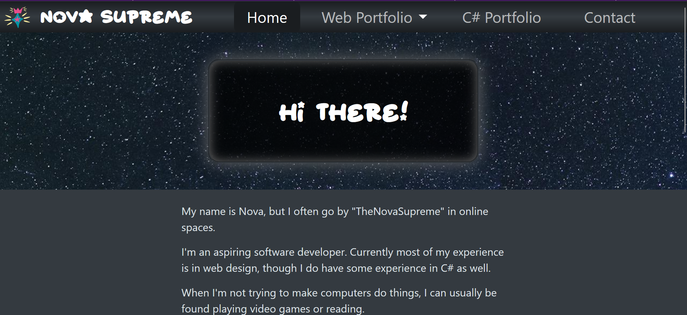
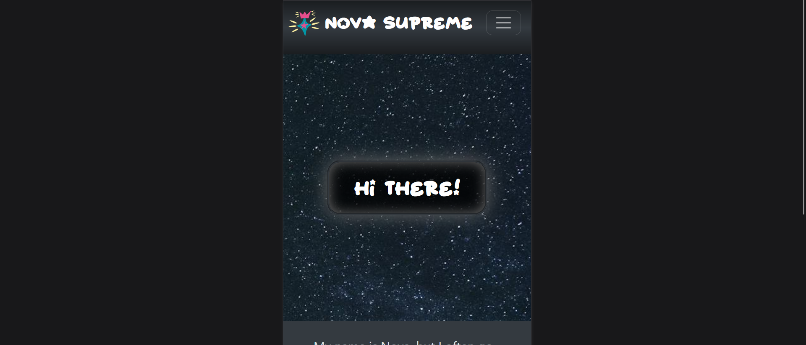
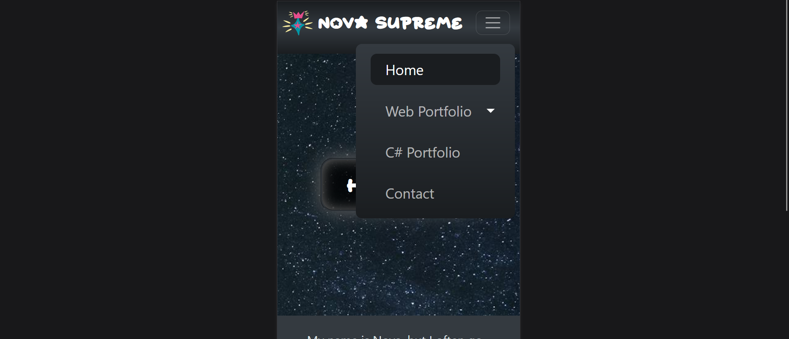
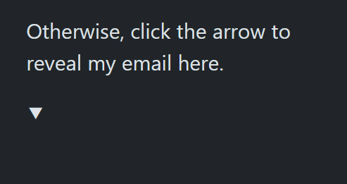
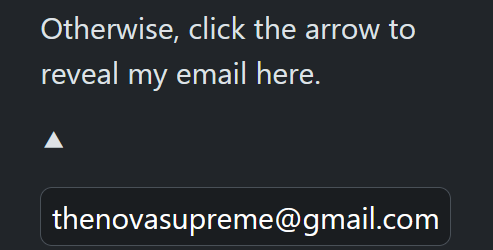

Our final project was designed to test all that we have learned this semester,
including CSS grids and Bootstrap. Our topic was our own to choose, but as we needed to show our
other sites and explain what we had learned from building them, I elected to update my portfolio to
showcase my work this semester. This is the site you're on now!
Bootstrap

Bootstrap is one of the things we learned toward the end of this semester, and hadn't had a chance to practice on our own
projects since learning it. Bootstrap is used heavily throughout this site, and this is only one example. Here you can see
a responsive grid display that is powered by Bootstrap's grid styles.
Responsive Navigation



Here I used Bootstrap to create a responsive navigation bar which displays horizontally on large screens, and
turns into a expandable hamburger button on smaller screens. We also learned how to do this ourselves this
semester using JavaScript.
JavaScript


This site uses a large amount of JavaScript, but most of it is powered by Bootstrap, such as the carousel images
on this page. The above example,though, was written in JavaScript by me. You can see that my email address is hidden
on the homepage until a user clicks the arrow to display it. It can then be hidden again with another click.